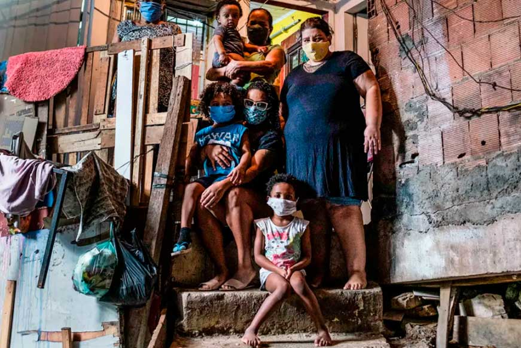

Módulo 1 | Aula 1
Teoria e conceitos básicos 1
A saúde mediada e contextualizada pelas condições de vida
Como indicamos anteriormente, a Análise de Situação de Saúde (ASIS) permite às equipes de saúde exercerem suas funções com mais eficiência. Neste contexto, é importante compreender a saúde e a doença como elementos interconectados e determinados socialmente.
Para analisar a situação de saúde é preciso compreender cada um destes componentes como processos dinâmicos. O que é saúde? O que significa estar doente? E como as condições de vida influenciam nestes processos?
Nesta perspectiva, a saúde não pode ser considerada apenas ausência de doença, mas diretamente relacionada ao bem-estar e qualidade de vida. Isto significa que a saúde deve sempre ser considerada contextual e mediada pelas condições de vida.
As condições de vida, por sua vez, não são determinadas pelo acaso, são o resultado prático de como a sociedade está organizada em cada momento da história. As condições de vida refletem:
- As desigualdades constituídas historicamente, que se repetem ao longo do tempo entre diferentes grupos populacionais;
- As mudanças rápidas que acontecem na sociedade, como alterações nas na economia, nas políticas de saúde, educação e/ou assistência social, por exemplo, que vão alterar estas condições de vida.
As condições de vida dependem do momento histórico e do lugar em que vivemos, pois por serem contextuais, são sempre dinâmicas (Castellanos, 2004). O impacto da pandemia de COVID-19 na população das favelas brasileiras ilustra perfeitamente como as condições de vida materializam as desigualdades históricas e as mudanças conjunturais, que determinam a saúde ou o adoecimento de certos grupos populacionais.
Durante o período mais crítico da pandemia, quando o número de óbitos e de infectados subiam drasticamente, as desigualdades estruturais fizeram com que pessoas que exercem trabalho informal fossem impedidas de cumprir uma recomendação básica para se proteger e também impedir a propagação do vírus - "fique em casa". As famílias com melhores condições de emprego e renda exerciam suas atividades de forma remota em suas casas, enquanto os entregadores levavam até suas residências produtos essenciais para sobrevivência como alimentos, produtos de higiene e remédios, ficando mais expostos ao contágio. Estes trabalhadores em geral eram moradores de favelas com alta densidade populacional e habitações precárias, o que impedia o isolamento vertical, ou seja, afastamento de outras pessoas dentro do próprio domicílio, colocando em situação de risco seus familiares.
Leia mais em: https://veja.abril.com.br/brasil/o-coronavirus-chega-a-favela/

Este é um exemplo contextual, que marca um determinado momento da história da humanidade, no entanto, podemos observar tantos outros no cotidiano da vida das populações nos territórios. Para autores como Castellanos (2004), as condições de vida são expressões de dimensões do processo de reprodução social.
A reprodução social são condições que se reproduzem, materializadas em diferentes níveis, que envolvem desde processos mais gerais, como as políticas macroeconômicas e sociais que influenciam no dia a dia, aos mais específicos, que envolvem as condições biológicas das pessoas, seus órgãos e tecidos.
Para o autor, a reprodução social se expressa em quatro dimensões:
Está relacionada ao potencial genético e imunológico, assim como ao conjunto de circunstâncias que envolvem a gestação, o nascimento, e os primeiros meses e anos de vida de uma pessoa.
Está relacionada ao local onde as populações vivem e trabalham, bem como a características ambientais mais amplas como condições de saneamento, geográficas e climáticas, por exemplo.
Está relacionada aos hábitos, formas de conduta, estilos de vida individuais e de grupos populacionais, fruto de processos culturais, que se expressam no nível individual (personalidade) e coletivo (educação formal e informal), construindo consciências individuais, coletivas e valores.
Está relacionada à articulação entre produção, distribuição e consumo, que se expressa por meio de salários e acesso a diferentes bens e serviços pelas pessoas e grupos populacionais.
A reprodução social nos territórios deve ser compreendida como o resultado da fusão entre os processos sociais e ambientais preexistentes, que determinam as condições de vida e de saúde locais. Deste modo, a situação de saúde de uma população expressa a materialização concreta dessa dinâmica complexa no âmbito dos territórios e dos grupos sociais.